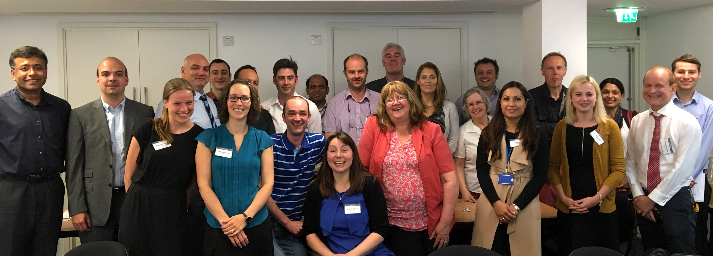

Welcome to the website for the General and Adolescent Paediatric Research Collaborative - UK and Ireland (GAPR-UKI). This new network is called the General and Adolescent Paediatric Research Collaborative- UK and Ireland and is known by the acronym GAPR-UKI. In developed countries a lot of secondary care of children and young people is in ‘general and adolescent’ paediatric units. In fact in the UK there is an estimate that 80% of all paediatrics is general. It is perhaps an irony that a lot of the care conducted in these busy units is not based on first class evidence. Some simple examples include the use of paracetamol for fever, the management of chronic fatigue syndrome, the treatment of and investigation of sepsis in babies, the management of asthma, the treatment of chronic constipation and the treatment and investigation of urninary tract infections. A lot of attention in research is given to less common medical problems in children and young people is driven by the interests and indeed biases of those with tertiary interests (i.e. the other 20% of activity). We therefore have agreed to establish GAPR-UKI , and commence a series of mixed method research approaches to help the evidence base for care of children and young people. We hope to collaborate in time with similar organisations in other countries where possible. We also intend to collaborate where appropriate with other established research networks both in the UK (e.g. PICANET - www.picanet.org.uk and PERUKI - www.peruki.org). Yours sincerely, Professor Alastair G Sutcliffe and Dr Colin Powell co-chairmen of GAPR-UKI
